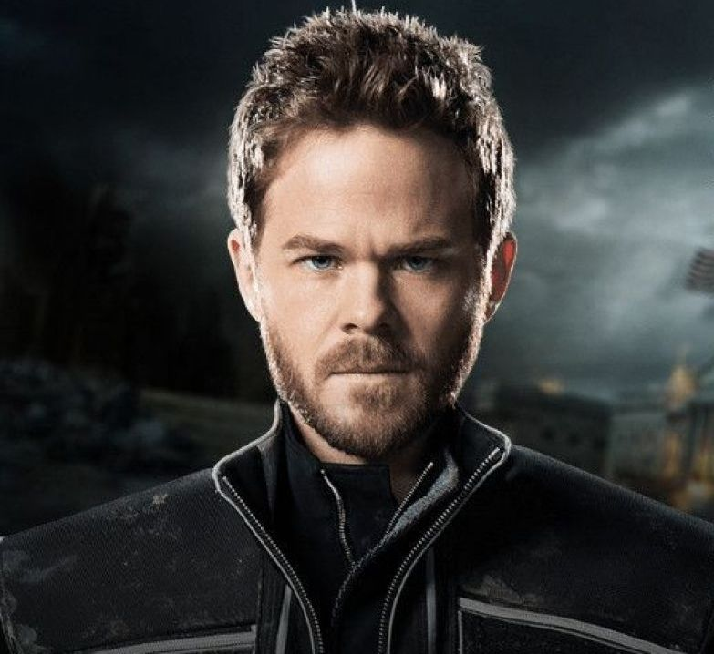

- Real Name: Arun Teja
- Alias: Iceman
- Species: Mutant
- Gender: Male
- Icemen (Robert "Bobby" Drake) is a fictional superhero appearing in American comic books published by Marvel Comics and is a founding member of the X-Men.
- He is a member of a subspecies of humans known as mutants, who are born with superhuman abilities. He has the ability to manipulate ice and cold by freezing water vapor around him. This allows him to freeze objects, as well as turn his body into ice.
- He possesses the power to instantly decrease the temperature of ambient water vapor in his immediate environment to below zero degrees Celsius, thereby freezing it into ice. He is able to make ice that will not break unless he wills it to. In this manner he is able to quickly form a great variety of ice structures, including projectiles, shields, ladders, baseball bats, etc. He often makes ice slides which form rapidly beneath and behind his feet, moving him along the slick surface at high speeds. He is also able to form exceedingly complicated structures within relative short time, such as miniature cities.
- He is also able to perceive the thermal energy level of objects around him. Because cold is the absence of heat, Iceman does not actually 'emanate' cold; rather, he decreases thermal energy.
- One of Iceman's best personality traits is that emotionally Bobby Drake is like the ice he manipulates"not cold but transparent". He is devastatingly "honest". He is very up-front with his emotions and his thoughts all the time.He's obviously incredibly brave both in terms of facing external, physical danger as well as facing up to unpleasant situations and admitting his own mistakes.